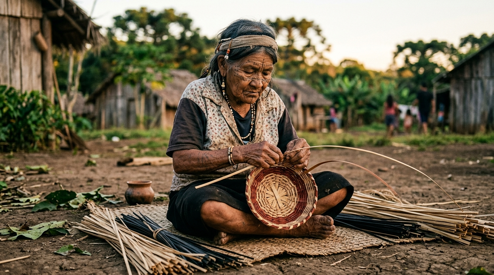
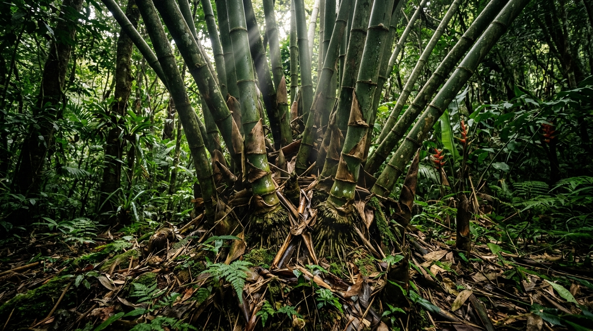
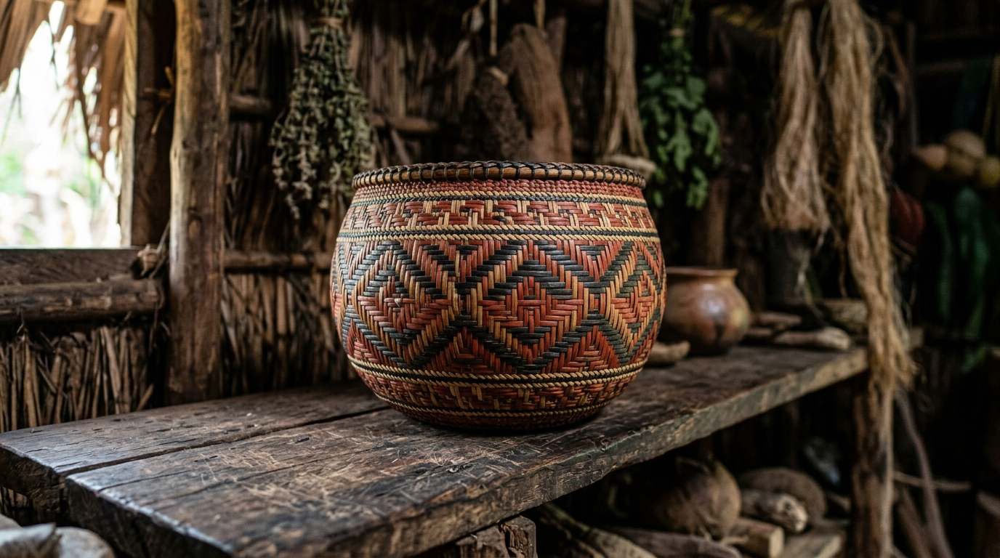
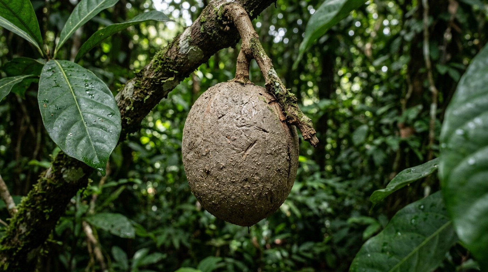
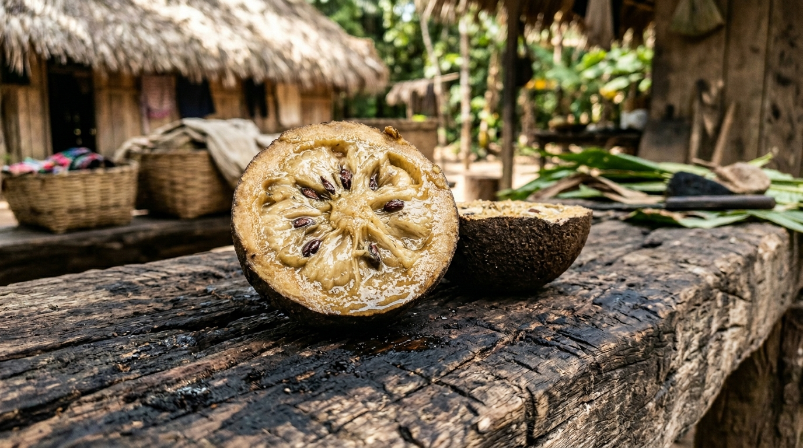
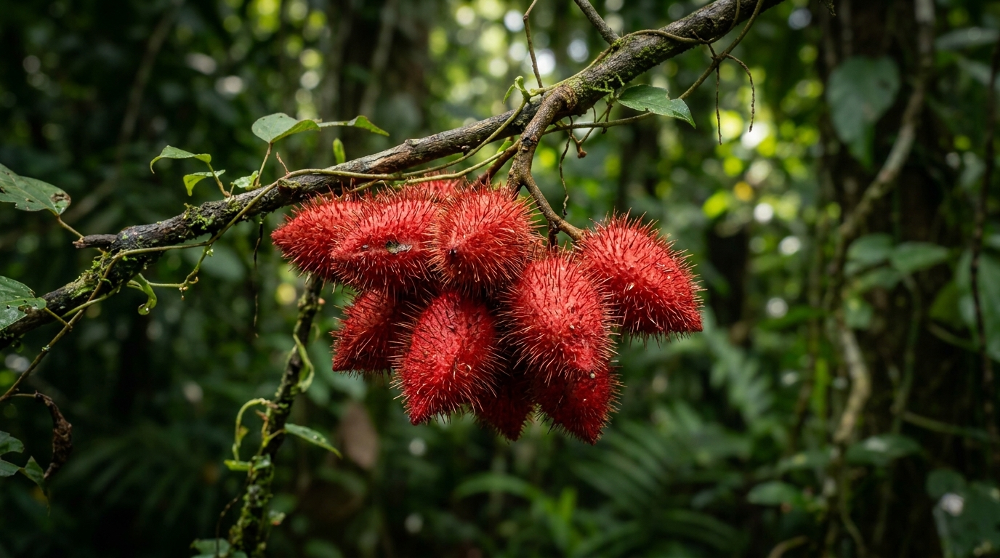
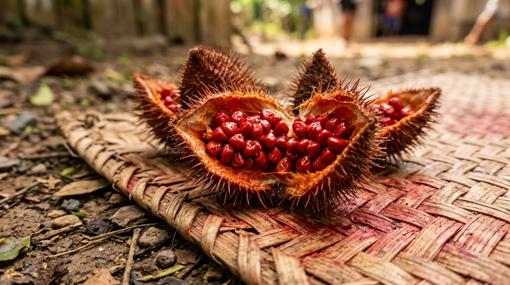

A força do artesanato na cultura Kaingang
Localizada na cidade de Cândido de Abreu, a aldeia indígena Kaingang tem como principal fonte de sustentação o artesanato produzido por suas mulheres. Essa prática vai além da economia: é uma tradição sagrada, passada de geração em geração, mantendo viva a força e a cultura de seu povo.

Harmonia entre Tradição e Natureza
O respeito à terra guia as mãos das artesãs Kaingang. O equilíbrio entre a produção e a floresta se mantém intacto, utilizando como base a taquara — um bambu nativo altamente flexível e resistente. Extraída de forma consciente, ela é cortada em tiras finas que não quebram, garantindo que a tradição do trançado continue sem agredir o meio ambiente.


O Jenipapo: A Tinta que Conta a História de um Povo
Para os povos indígenas, a natureza é uma extensão de seu próprio corpo e espírito. Um dos maiores símbolos dessa conexão é o uso do jenipapo, um fruto nativo de onde se extrai uma tintura natural profundamente ligada à identidade cultural. Retirado enquanto o fruto ainda está verde, o sumo transparente do jenipapo oxida ao entrar em contato com o ar e com a pele, transformando-se em um tom negro-azulado intenso.
Mais do que um adorno estético, a pintura com jenipapo é uma linguagem. Os grafismos desenhados nos corpos e nos artesanatos carregam significados ancestrais: marcam celebrações, indicam pertencimento, oferecem proteção espiritual e celebram a passagem do tempo. Extrair a tinta do jenipapo é um ritual de respeito à terra, mantendo viva a memória de que a floresta nos veste, nos protege e nos dá voz.


O Urucum: A Cor da Vida e da Energia Ancestral
Na rica paleta da natureza, poucas cores são tão representativas para os povos indígenas quanto o vermelho vibrante do urucum. Extraída das pequenas sementes contidas em seus frutos espinhosos, a tinta de urucum é muito mais do que um pigmento natural; ela é o símbolo da vida, da força e do vigor.
O processo de preparo é uma arte passada através das gerações: as sementes são maceradas e frequentemente misturadas a óleos naturais ou água para criar uma pasta espessa e duradoura. Quando aplicada na pele ou em peças de artesanato, a cor vermelha atua como um escudo. Espiritualmente, afasta energias ruins e protege o corpo e a alma; fisicamente, a pintura também atua como um protetor solar natural e repelente de insetos. Vestir o vermelho do urucum é conectar-se com o calor do sol, com a força do sangue e com a vitalidade da terra.


Teste seus conhecimentos
Você acompanhou nossa jornada pela cultura, arte e saberes da Aldeia Kaingang. Chegou a hora de ver o quanto você aprendeu. Selecione uma resposta para cada pergunta abaixo!
Por favor, responda todas as perguntas antes de continuar.
Obrigado por valorizar e aprender sobre a cultura indígena!